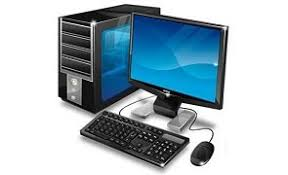

Computación
¿Qué es la computación?
La computación es una rama de la tecnología que se encarga del estudio y uso de las computadoras para procesar, almacenar y transmitir información de manera automática. Gracias a la computación, es posible realizar una gran variedad de tareas como escribir documentos, hacer cálculos, investigar en internet, comunicarse con otras personas y desarrollar programas. Además, es fundamental en el avance de la ciencia, la medicina, la educación y muchas otras áreas, ya que permite resolver problemas de forma rápida y eficiente.
.jpg)
¿Qué es una computadora?
Una computadora es una máquina electrónica capaz de recibir datos, procesarlos mediante instrucciones (programas) y generar resultados útiles. Funciona a través de componentes físicos y programas que trabajan en conjunto para realizar tareas. Las computadoras pueden ser de diferentes tipos, como computadoras de escritorio, laptops, tabletas y teléfonos inteligentes.

Partes de la computadora
Las partes de la computadora se dividen principalmente en dos categorías: el hardware y el software. El hardware corresponde a todos los componentes físicos que se pueden ver y tocar, como el monitor, el teclado, el mouse, la unidad central de procesamiento (CPU), la memoria RAM y el disco duro, los cuales permiten el funcionamiento físico del equipo. Por otro lado, el software se refiere a los programas y sistemas que le indican a la computadora qué tareas realizar, como los sistemas operativos (por ejemplo, Windows o Linux), los navegadores de internet y las aplicaciones como Word o Excel. Ambos elementos son fundamentales, ya que el hardware necesita del software para funcionar correctamente y el software requiere del hardware para ejecutarse.
.jpg)
Ejemplos de uso
La computadora trabaja en tres pasos principales: Entrada: Se ingresan datos (teclado, mouse) Proceso : La computadora analiza la información Salida : Muestra resultados (pantalla, impresora)

Video sobre computación
Para aprender más:
| Nombre | Enlace |
|---|---|
| Video de computación | Ver video |